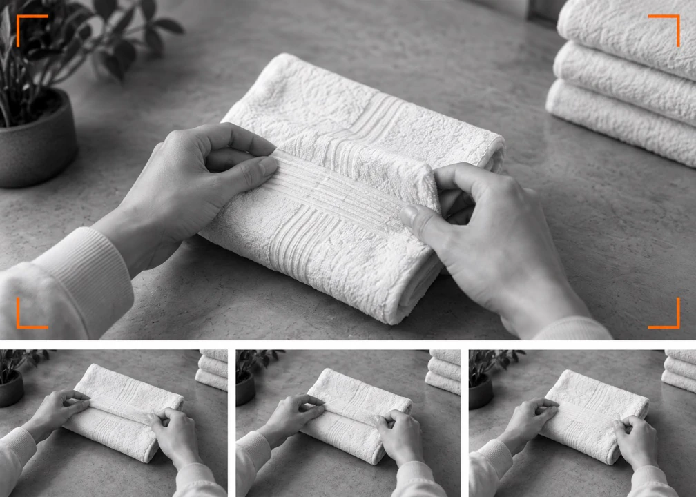
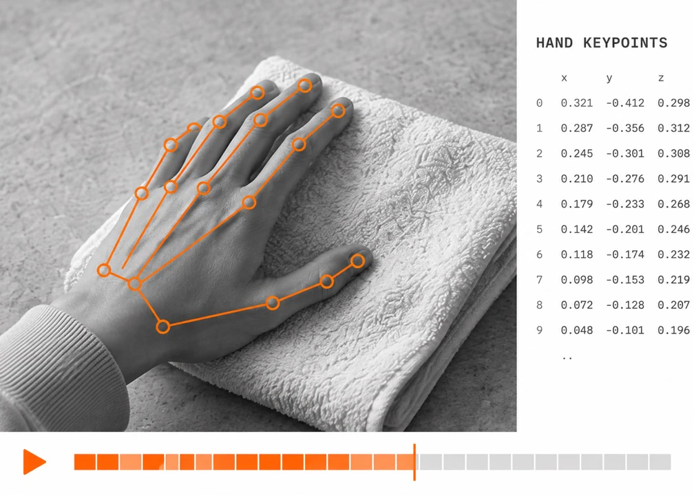
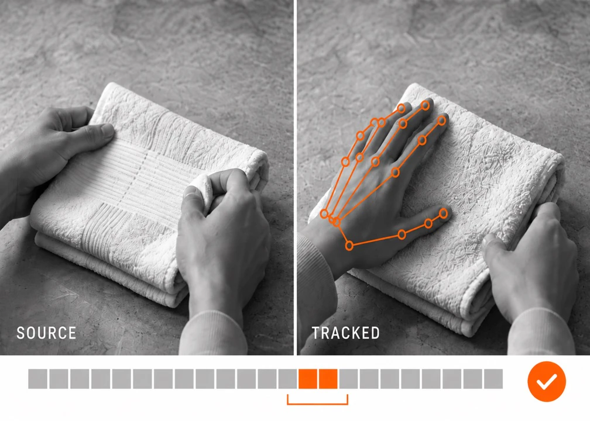
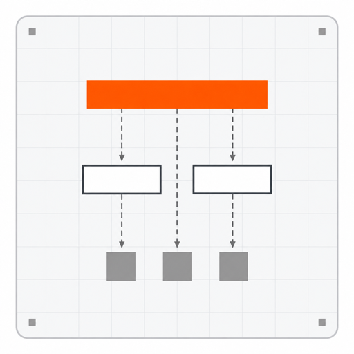
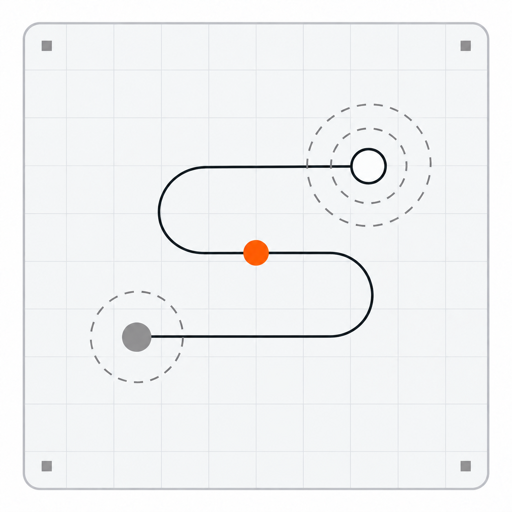
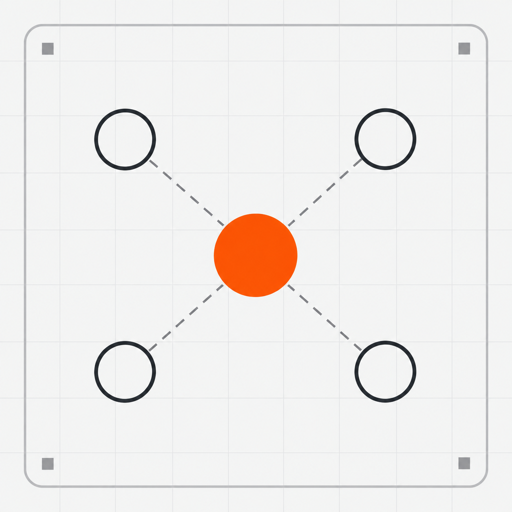
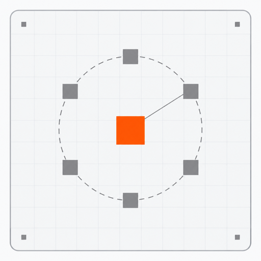

영상을 불러오지 못했습니다. 다시 재생하거나 다른 예시를 선택해주세요.실사 데이터 수집
동작과 장소, 촬영 시점을 정하고 필요한 1인칭 영상을 수집합니다.
ABOUT US
한국의 생활 공간에서 1인칭 영상을 수집합니다. 필요한 동작과 촬영 조건을 정하고, 교육·가공·검수를 거쳐 학습에 쓰일 데이터를 준비합니다.
SELECTED DATA
DATA SERVICES

영상을 불러오지 못했습니다. 다시 재생하거나 다른 예시를 선택해주세요.동작과 장소, 촬영 시점을 정하고 필요한 1인칭 영상을 수집합니다.

영상을 불러오지 못했습니다. 다시 재생하거나 다른 예시를 선택해주세요.영상에서 손의 관절 좌표를 추정하고, 작업 구간과 함께 정리합니다.

영상을 불러오지 못했습니다. 다시 재생하거나 다른 예시를 선택해주세요.원본과 추적 결과를 대조하고, 누락과 가림 구간을 확인합니다.
HOW IT WORKS
QUALITY & RIGHTS

본 수집 전에 구도와 동작 범위를 샘플로 확인합니다.

영상과 라벨을 대조해 누락·가림 구간을 확인합니다.

촬영 동의와 사용 목적·기간·재배포 조건을 프로젝트별 계약에서 정합니다.

영상·라벨·검수 기록을 전달하고, 미달 항목은 합의한 범위에서 보완합니다.
FAQ
1인칭 시점의 생활 동작 영상을 다룹니다. 공개 샘플을 먼저 살펴보고, 구매 가능한 범위와 이용 조건을 문의해 주세요.
가능합니다. 필요한 동작, 환경, 촬영 시점, 수량과 일정을 바탕으로 수집 계획을 협의합니다.
본 수집 전에 샘플을 승인하고 촬영·가공·검수 기준을 정합니다. 인수 기준에 미달한 항목은 계약에서 정한 범위에 따라 보완합니다.
학습·평가·상업적 이용과 재배포 조건은 프로젝트별 계약에서 정합니다. 촬영 동의와 데이터 이용 범위를 함께 확인합니다.
영상, 라벨, 동의·이용 문서와 검수 기록을 협의한 구성으로 전달합니다. 필요한 파일 형식과 전달 경로는 사전에 정합니다.
참여 안내와 촬영 교육은 화면에 고정된 60BASE Studio 배지에서 Physical AI Studio로 이동해 확인할 수 있습니다.
DATA INQUIRY